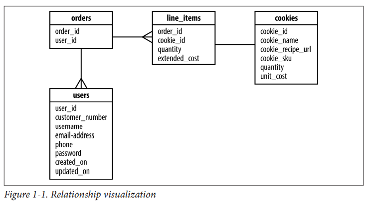

Let's learn how to use SQLAlchemy Core to provide database services to our applications. SQLAlchemy Core is a Pythonic way of representing elements of both SQL commands and data structures called SQL Expression Language. SQLAlchemy Core can be used with either the Django or SQLAlchemy ORM, or can be used as a standalone solution.
The first thing we must do is define what data our tables hold, how that data is interrelated, and any constraints on that data.
In order to provide access to the underlying database, SQLAlchemy needs a represen‐ tation of the tables that should be present in the database. We can do this in one of three ways:
This article focuses on the first of these, as that is the approach used with SQLAlchemy Core.
The Table objects contain a list of typed columns and their
attributes, which are associated with a common metadata container.
There are four categories of types we can use inside of SQLAlchemy:
SQLAlchemy defines a large number of generic types that are abstracted away from
the actual SQL types supported by each backend database. These types are all available in the
sqlalchemy.types module, and for convenience they are also available in
the sqlalchemy module.
Table 1-1. Generic type representations
| SQLAlchemy | Python | SQL |
|---|---|---|
| BigInteger | int | BIGINT |
| Boolean | bool | BOOLEAN or SMALLINT |
| Date | datetime.date | DATE (SQLite: STRING) |
| DateTime | datetime.datetime | DATETIME (SQLite: STRING) |
| Enum | str | ENUM or VARCHAR |
| Float | float or Decimal | FLOAT or REAL |
| Integer | int | INTEGER |
| Interval | datetime.timedelta | INTERVAL or DATE from epoch |
| LargeBinary | byte | BLOB or BYTEA |
| Numeric | decimal.Decimal | NUMERIC or DECIMAL |
| Unicode | unicode | UNICODE or VARCHAR |
| Text | str | CLOB or TEXT |
| Time | datetime.time | DATETIME |
It is important to learn these generic types, as you will need to use and define them regularly.
In addition to the generic types listed in Table 1-1, both SQL standard and vendor specific types are
available and are often used when a generic type will not operate as
needed within the database schema due to its type or the specific type specified in an
existing schema. The SQL standard
types are available within the sqlalchemy.types module. To help make a distinction
between them and the generic types, the standard types are in all capital letters.
Vendor-specific types are useful in the same ways as SQL standard types; however,
they are only available in specific backend databases. You can determine what is available via the
chosen dialect's documentation or SQLALchemys website. They are available in the
sqlalchemy.dialects module and there are submodules for each
database dialect.
We might want to take advantage of the powerful JSON field from PostgreSQL, which we can do with the following statement:
from sqlalchemy.dialects.postgresql import JSONYou can also define custom types that cause the data to be stored in a manner of your choosing.
Now that we've seen the four variations of types we can use to construct tables, let's take a look at how the database structure is held together by metadata.
Metadata is used to tie together the database structure so it can be quickly accessed inside SQLAlchemy. It's often useful to think of metadata as a kind of catalog of Table objects with optional information about the engine and the connection.
Those tables can be accessed via a dictionary, MetaData.tables. Read operations are thread-safe; however, table construction is not completely thread-safe. Metadata needs to be imported and initialized before objects can be tied to it.
Let's initialize an instance of the MetaData objects that we can use throughout the rest of the examples in this chapter to hold our information catalog:
from sqlalchemy import MetaData
metadata = MetaData()Once we have a way to hold the database structure, we’re ready to start defining tables.
Table objects are initialized in SQLAlchemy Core in a supplied MetaData object by calling the Table constructor with the table name and metadata; any additional arguments are assumed to be column objects.
Column objects represent each field in the table. The columns are constructed by calling Column with a name, type, and then arguments that represent any additional SQL constructs and con‐ straints.
In Example 1-1, we create a table that could be used to store the cookie inventory for our online cookie delivery service.
Example 1-1. Instantiating Table objects and columns
from sqlalchemy import Table, Column, Integer, Numeric, String, ForeignKey
cookies = Table('cookies', metadata,
Column('cookie_id', Integer(), primary_key=True), #Notice the way we marked this column as the table's primary key.
Column('cookie_name', String(50), index=True), #We're making an index of cookie names to speed up queries on this column.
Column('cookie_recipe_url', String(255)),
Column('cookie_sku', String(55)),
Column('quantity', Integer()),
Column('unit_cost', Numeric(12, 2)), #This is a column which takes multiple arguments, length and precision, such as 11.2, which would give us numbers up to 11 digits long with two decimal places.
)Before we get too far into tables, we need to understand their fundamental building blocks: columns.
Columns define the fields that exists in our tables, and they provide the primary means by which we define other constraints through their keyword arguments. Different types of columns have different primary arguments. For example, String type columns have length as their primary argument, while numbers with a fractional component will have precision and length. Most other types have no primary arguments.
Columns can also have some additional keyword arguments that help shape their behavior even further. We can mark columns as required and/or force them to be unique. We can also set default initial values and change values when the record is updated.
Example 1-2. Another Table with more Column options
from datetime import datetime
from sqlalchemy import DateTime
users = Table('users', metadata,
Column('user_id', Integer(), primary_key=True),
Column('username', String(15), nullable=False, unique=True),
Column('email_address', String(255), nullable=False),
Column('phone', String(20), nullable=False),
Column('password', String(25), nullable=False),
Column('created_on', DateTime(), default=datetime.now),
Column('updated_on', DateTime(), default=datetime.now, onupdate=datetime.now)
)You'll notice that we set default and onupdate to the callable date
time.now instead of the function call itself, datetime.now(). If we
had used the function call itself, it would have set the default to the
time when the table was first instantiated. By using the callable, we
get the time that each individual record is instantiated and updated.
We've been using column keyword arguments to define table constructs and constraints; however, it is also possible to declare them outside of a Column object. This is critical when you are working with an existing database, as you must tell SQLAlchemy the schema, constructs, and constraints present inside the database. For example, if you have an existing index in the database that doesn't match the default index naming schema that SQLAlchemy uses, then you must manually define this index. The following two sections show you how to do just that
Keys and constraints are used as a way to ensure that our data meets certain requirements prior to being stored in the database. The objects that represent keys and constraints can be found inside the base SQLAlchemy module, and three of the more common ones can be imported as shown here:
from sqlalchemy import PrimaryKeyConstraint, UniqueConstraint, CheckConstraintThe most common key type is a primary key, which is used as the unique identifier for each record in a database table and is used used to ensure a proper relationship between two pieces of related data in different tables. A column can be made a primary key simply by using the primary_key keyword argument.
Primary keys can also be defined after the columns in the table constructor
PrimaryKeyConstraint('user_id', name='user_pk')Another common constraint is the unique constraint, which is used to ensure that no two values are duplicated in a given field. For our online cookie delivery service, for example, we would want to ensure that each customer had a unique username to log into our systems. We can also assign unique constraints on columns, as shown before in the username column, or we can define them manually as shown here:
UniqueConstraint('username', name='uix_username')Not shown in Example 1-2 is the check constraint type. This type of constraint is used to ensure that the data supplied for a column matches a set of user-defined criteria. In the following example, we are ensuring that unit_cost is never allowed to be less than 0.00 because every cookie costs something to make
CheckConstraint('unit_cost >= 0.00', name='unit_cost_positive')Indexes are used to accelerate lookups for field values, and in Example 1-1, we created an index on the cookie_name column because we know we will be searching by that often. When indexes are created as shown in that example, you will have an index called ix_cookies_cookie_name. We can also define an index using an explicit construction type. Multiple columns can be designated by separating them by a comma. You can also add a keyword argument of unique=True to require the index to be unique as well. When creating indexes explicitly, they are passed to the Table constructor after the columns. To mimic the index created in Example 1-1, we could do it explicitly as shown here:
from sqlalchemy import Index
Index('ix_cookies_cookie_name', 'cookie_name')We can also create functional indexes that vary a bit by the backend database being used. This lets you create an index for situations where you often need to query based on some unusual context. For example, what if we want to select by cookie SKU and name as a joined item, such as SKU0001 Chocolate Chip? We could define an index like this to optimize that lookup:
Index('ix_test', mytable.c.cookie_sku, mytable.c.cookie_name))Now that we have a table with columns with all the right constraints and indexes, let's look at how we create relationships between tables. We need a way to track orders, including line items that represent each cookie and quantity ordered. To help visualize how these tables should be related, take a look at Figure 1-1.

One way to implement a relationship is shown in Example 1-3 in the line_items table on the order_id column; this will result in a ForeignKeyConstraint to define the relationship between the two tables. In this case, many line items can be present for a single order. However, if you dig deeper into the line_items table, you'll see that we also have a relationship with the cookies table via the cookie_id ForeignKey. This is because line_items is actually an association table with some additional data on it between orders and cookies. Association tables are used to enable many-to-many relationships between two other tables. A single ForeignKey on a table is typically a sign of a one-to-many relationship; however, if there are multiple ForeignKey relationships on a table, there is a strong possibility that it is an association table.
Example 1-3. More tables with relationships
from sqlalchemy import ForeignKey
orders = Table('orders', metadata,
Column('order_id', Integer(), primary_key=True),
Column('user_id', ForeignKey('users.user_id')),
Column('shipped', Boolean(), default=False)
)
line_items = Table('line_items', metadata,
Column('line_items_id', Integer(), primary_key=True),
Column('order_id', ForeignKey('orders.order_id')),
Column('cookie_id', ForeignKey('cookies.cookie_id')),
Column('quantity', Integer()),
Column('extended_cost', Numeric(12, 2))
)
You can also define a ForeignKeyConstraint explicitly, which can be useful if trying to match an existing database schema so it can be used with SQLAlchemy. This works in the same way as before when we created keys, constraints, and indexes to match name schemes and so on. You will need to import the ForeignKeyConstraint from the sqlalchemy module prior to defining one in your table definition. The following code shows how to create the ForeignKeyConstraint for the order_id field between the line_items and orders table:
ForeignKeyConstraint(['order_id'], ['orders.order_id'])Up until this point, we've been defining tables in such a way that SQLAlchemy can understand them. If your database already exists and has the schema already built, you are ready to begin writing queries. However, if you need to create the full schema or add a table, you'll want to know how to persist these in the database for permanent storage.
All of our tables and additional schema definitions are associated with an instance of
metadata. Persisting the schema to the database is simply a matter of calling the create_all()
method on our metadata instance with the engine where it should create those tables:
metadata.create_all(engine)By default, create_all will not attempt to re-create tables that already exist in the database, and it is safe to run multiple times. It's wiser to use a database migration tool like Alembic to handle any changes to existing tables or additional schema than to try to handcode changes directly in your application code
Now that we have persisted the tables in the database, let's take a look at Example 1-4, which shows the complete code for the tables we've been working on in this chapter.
Example 1-4. Full in-memory SQLite code sample
from datetime import datetime
from sqlalchemy import (MetaData, Table, Column, Integer, Numeric, String,
DateTime, ForeignKey, create_engine)
metadata = MetaData()
cookies = Table('cookies', metadata,
Column('cookie_id', Integer(), primary_key=True),
Column('cookie_name', String(50), index=True),
Column('cookie_recipe_url', String(255)),
Column('cookie_sku', String(55)),
Column('quantity', Integer()),
Column('unit_cost', Numeric(12, 2))
)
users = Table('users', metadata,
Column('user_id', Integer(), primary_key=True),
Column('customer_number', Integer(), autoincrement=True),
Column('username', String(15), nullable=False, unique=True),
Column('email_address', String(255), nullable=False),
Column('phone', String(20), nullable=False),
Column('password', String(25), nullable=False),
Column('created_on', DateTime(), default=datetime.now),
Column('updated_on', DateTime(), default=datetime.now, onupdate=datetime.now)
)
orders = Table('orders', metadata,
Column('order_id', Integer(), primary_key=True),
Column('user_id', ForeignKey('users.user_id'))
)
line_items = Table('line_items', metadata,
Column('line_items_id', Integer(), primary_key=True),
Column('order_id', ForeignKey('orders.order_id')),
Column('cookie_id', ForeignKey('cookies.cookie_id')),
Column('quantity', Integer()),
Column('extended_cost', Numeric(12, 2))
)
engine = create_engine('sqlite:///:memory:')
metadata.create_all(engine)